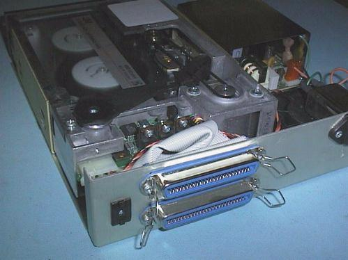
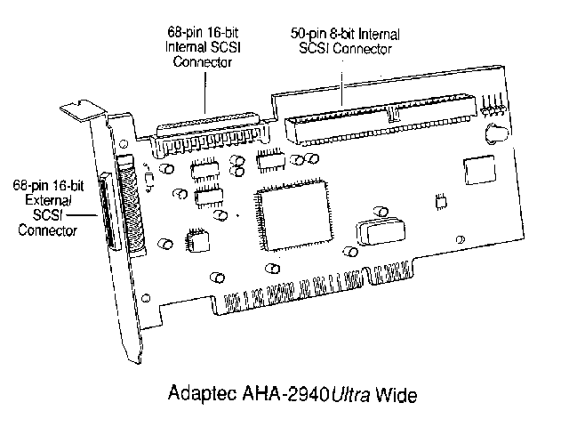

Phil Storrs PC Hardware book
The SCSI Interface
(Small Computer Systems Interface)
SCSI is a bus and an interface standard. The theory is that if you buy a SCSI device you can plug it into a SCSI adaptor in your computer and it will work, just as a parallel or serial port device will work when plugged into the appropriate I/O port. There are two good points about the SCSI interface.
- Fast data transfer - at least 10MBytes per second.
- On one SCSI adaptor can daisy chain to up to at least seven different SCSI devices.
- SCSI devices can be internal or external.
Each SCSI device will work quickly and won't use much of the host computer's resources because the SCSI bus has its own controller chip which takes care of the SCSI input/output workload. Until the advent of Enhanced IDE, SCSI disk drives worked faster than a normal IDE hard drive which is why some "high end" computers used SCSI hard drives instead of IDE drives. The SCSI interface was also used for early generation CDROM drives.

This is a typical external SCSI-1 device (a tape backup drive)
Note the following:
- The two 50 pin SCSI connectors to allow devices to be daisy chained
- The thumb wheel switch to select the device SCSI number (ID)
- The power supply
ANSI (American National Standards Institute) has set several specifications for the SCSI interface. The original SCSI has been called SCSI-1, and now there is, Fast SCSI, Ultra SCSI, Fast Wide SCSI, Ultra 2 SCSI, Wide Ultra SCSI and Wide Ultra 2 SCSI.
The SCSI interface provides compatibility across platforms and architectures. The SCSI interface is commonly used for very large capacity hard drives, multiple CDROM installations, tape backup drives, magneto-optical drives, optical scanners and some high capacity removable media drives such as the ZIP, JAZ and Syquist devices. With the correct software support the same peripheral devices can be used on almost any hardware platform. (DOS, Apple MAC, or PowerPC for example)
The hardware required
To add SCSI devices to a MS-DOS computer, you must first install a SCSI adaptor card in one of the PC's bus slots. If you are using a lap top computer, you can use a PCMCIA SCSI adaptor. All you have to do then is to connect the SCSI devices to that adaptor and install the appropriate device drivers to make the operating system aware of the interface and the device. In the past SCSI has had a bad reputation for being hard to get going and this has been due to several factors, most of which are related to the heritage of the PC.
- The adaptor card requires I/O addresses and sometimes also require an IRQ line and a DMA channel.
- A device driver is required to provide support for the SCSI interface. This can be done either by a Device driver loaded from the Config.sys file or by a BIOS Extension ROM on the interface card. This latter method requires some memory space in the Reserved Memory area and is only used if the the boot device is a SCSI hard drive.
- Support for the devices must often be provided at the DOS level by driver files loaded from the Autoexec.bat file.
It has not been a trivial task to connect SCSI devices in the past but todays Plug and Play specifications and the easy installation software provided by the manufacturers of SCSI interface adaptors, make using SCSI as easy as using an enhanced IDE interface. Also, modern operating systems are far more aware of SCSI devices than DOS and Windows 3.1 ever was. Windows 95 and 98 and NT have native support for many SCSI devices built in.
A quick look at SCSI.
The SCSI bus implements its own control command language, which allows SCSI hosts to send multiple byte command messages. Each type of SCSI device uses a specific set of commands and each operates independently to provide the best performance for that device.
DOS transfers data as clusters, while SCSI transfers the data as blocks. This means the SCSI host adaptors have an on board processors that "drives" the SCSI bus. The hosadaptor receives, queues and prioritizes commands, reducing the I/O load on the
computers operating system.
The host adaptor sends commands to specific devices as directed by the device's software driver. Every device carries a unique SCSI ID number, and some SCSI devices can disconnect from the bus for a few milliseconds, perform a function and then reconnect to the bus. This allows the SCSI bus to perform other functions while the device handles a process off-line.
Most adaptors support the Western Digital 1003 emulation standards which provides booting from a BIOS Extension ROM on the adaptor and support for multiple hard drives (up to two under DOS). Software drivers generally support more than two hard drives and most other devices.
Early SCSI devices (now referred to as SCSI-1) contained non-standard command sets. As a result, manufacturers built device-specific host adaptors. Although many products now work with independently produced host adaptors, the driver must support the host and the device. As a result, driver conflicts continue to be a problem in a multiple device environment with old hardware.
SCSI-2 standards increased compatibility among peripherals by defining a more universal set of software commands. This provided manufacturers with a more precise foundation to construct intelligent controllers for SCSI peripherals.
SCSI problems solved by ASPI
The Advanced SCSI ProgRAMming Interface (ASPI), developed by Adaptec, reduces compatibility problems between interface adaptors and SCSI devices by providing a common API (Application ProgRAM Interface) between the devices and host adaptor. The makers of SCSI devices must write software drivers to this standard, and host adaptors provide an ASPI command set on the adaptor. At a DOS and Windows level, the user loads the common ASPI driver at boot up (this driver supports the interface card) and the device drivers for each specific device that is plugged into the SCSI Bus. This approach allows one host adaptor to support multiple device types.
SCSI has several types of cable
SCSI devices can be Internal devices, mounted in the computers case, or they can be External devices, enclosed in external enclosures. The eight bit SCSI standards call for a 50 pin ribbon cable for internal connections and a special SCSI cable and connector for external connections.
External connections
SCSI-1 and SCSI-2 external devices are connected via a special 50 pin connector on the SCSI devices, and a DB25S (socket) on the back of the interface adaptor.
When working with this type of external SCSI cable be carefull of the following:
- Check the connections on the DB25 connectors because not all connectors are wired the same.
- The DOS computers parallel printer interface also uses a DB25S (socket) connector and if a parallel printer is plugged into the SCSI socket the SCSI I/O port may be destroyed.
Here is a SCSI connector compared to a Centronics connector
The Wide SCSI standard uses a new very small 68 pin connector for both internal and external connections. See the diagram below of a typical modern SCSI interface card for details.

SCSI Internal Connections
SCSI-1 and SCSI-2 internal devices are connected via a 50 pin ribbon cable, Fast SCSI devices use a special 68 pin connector internally.
Line Termination
Line terminators are important on SCSI cables ,both ends of a SCSI "chain" must be terminated.
Many SCSI devices in external enclosures have an "IN" and "OUT" socket. These are used to daisy chain the devices and the last device in the chain has a Termination Plug put into it's OUT socket. Another alternative is to use 50 pin SCSI connectors that are both a plug and a socket. The Ternimation Plug is plugged into the socket on the end of the cable connecting to the last device.
The SCSI adaptor cards and internal SCSI devices usually have terminator sockets on the card with resistor packs plugged into them. These are used when terminating internal SCSI connections.
SCSI device selection
A SCSI interface can have up to seven devices connected and each device must have its SCSI address selected via jumpers or dip switches. Although SCSI can have up to seven devices connected, DOS can only support two hard drives. Additional hard drives can be provided by the use of Device Drivers or by using an alternative operating system. You can only fit one ST 506, ESDI or IDE hard disk interface card to a computer and one of these cards can provide either one or two hard disks. A SCSI interface card can be fitted in addition to one of the above cards but remember DOS can only recognise a maximum of two hard drives without the use of a device driver.
A SCSI boot device
If a SCSI drive is going to be used to boot the computer then the SCSI interface card must have a BIOS Extension ROM to provide support for the SCSI drive. One SCSI card can be used to interface one or more hard drives, a tape backup drive and one or more CDROM drives. Device drivers are required to provide support for the tape backup and CDROM drives and if the hard drives do not have to boot the computer then a device driver, rather than a BIOS Extension ROM can be used to provide hard drive support.
Potential SCSI problems
Some older SCSI devices, such as scanners, require device specific host adaptors. Using several host adaptors in a single system can cause installation problems because users must sort out various BIOS Extension ROM and memory address conflicts. Network cards, video cards and modems with memory addresses can also conflict with the host adaptor.
The SCSI Interface and APPLE
All Apple Macintosh computers come with built-in SCSI ports to which you can daisy chain one SCSI peripheral after another, until you have a total of seven. This is a fairly easy job, since Macintosh SCSI ports are standard and manufacturers of Macintosh SCSI peripherals will certify that their product works with the Macintosh SCSI standard. They wouldn't sell it if it didn't.
The SCSI types
| Name |
Speed |
Width |
Number of
devices * |
| SCSI (1) |
5 MB/s |
8 bit |
8 * |
| Fast SCSI |
10 MB/s |
8 bit |
8 * |
| Ultra SCSI |
20 MB/s |
8 bit |
8 * |
| Fast Wide SCSI |
20 MB/s |
16 bit |
16 * |
| Ultra 2 SCSI |
40 MB/s |
8 bit |
8 * |
| Wide Ultra SCSI |
40 MB/s |
16 bit |
16 * |
| Wide Ultra 2 SCSI |
80 MB/s |
16 bit |
16 * |
Note:* one device is the interface card itself.
Copyright © Phil. Storr, last updated 4th December 1998